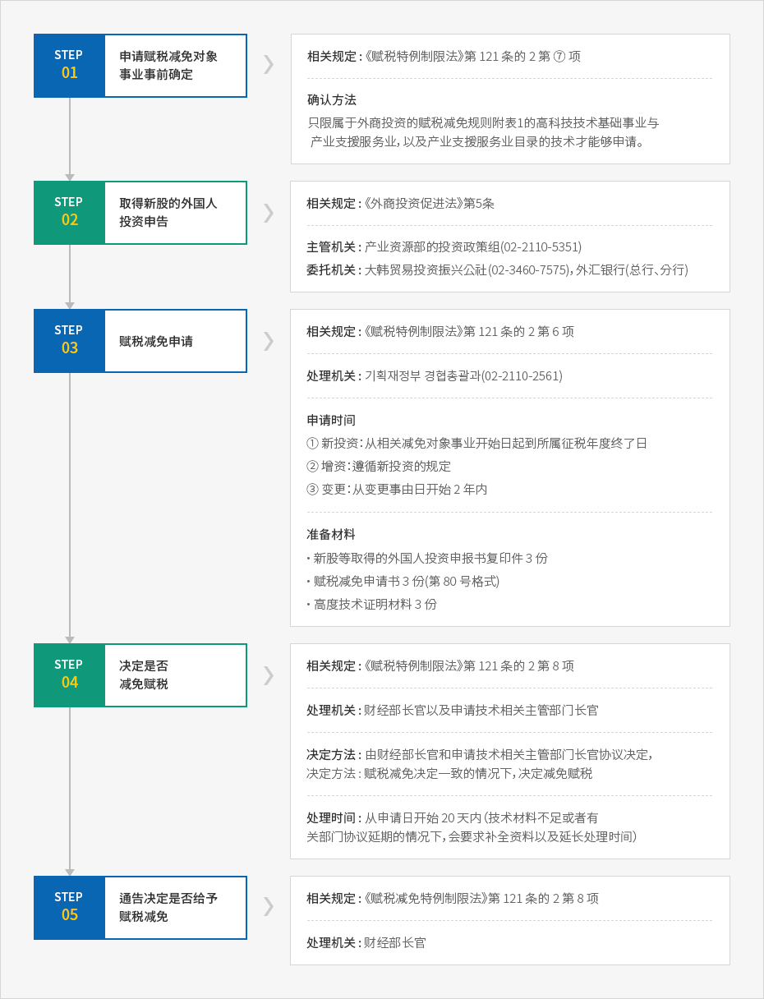

赋税支援
- Home
- 投资指南
- 投资鼓励机制
- 赋税支援
外商投资企业的赋税支援
根据针对外商投资者所制定的《赋税特例制限法》的规定，对事业者所得、分配所得、技术投入金额、劳动所得等可减免法人税和所得税。同时，也减免取得、保有财产的取得税、注册税、财产税等。
法人税的减免
- 外商投资企业法人税的减免是以《赋税特例制限法》上规定的减免对象事业中所产生所得的事业为对象。但是，投资减免对象事业的外国法人或者具有外国企业表决权股份的大韩民国国民（法人）直接或者间接拥有 10% 以上（包括 10% ）的情况，与持股比例相应的投资部分不能被视为税收减免对象事业。即，进出海外的国内企业的国内再投资（round trip）不适用税收减免。
- 减免计算日 在最初发生收入的征税年度起，或者事业开始后 5 年之日所属征税年度这两种中，适用于先开始的征税年度。
事业开始日的标准
- 在制造业中，指的是不同制造厂所开始生产资料生产的日期
- 在矿业中，指的是不同事业场所开始矿物的采取、采矿的日期
- 在其它事业中，开始供给生产资料或者工作的日期
- 在增资的情况下，把增资登记日视为事业开始日适用于本规定，外国人因准备金, 再评价公积金等资本转入而取得的股份等，根据作为其发生根据的股份等的减免案例来决定减免期限与减免比例。有偿减资后 5 年以内进行增资，申请税收减免时，仅限减资前净增部分的外商投资比例决定减免。 但是，通过单纯的国内企业增资，获得外国人投资的外商投资企业不属于上述“增资”的范围，而属于“新”外商投资。
- 合并的情况下，外商投资企业在减免期间中与国内法人(处于减免期间中的外商投资企业除外) 合并, 当该合并法人的外商投资比例减少时, 适用合并前外商投资企业的外商投资比例。
- 转入不再是新减免对象的再评价积累金、准备金的资本时，进行均等分配的情况下，增资的事业年度或者下一事业年度的减免比率不变动。
减免税额计算方法
| 区分 | 计算方法 |
|---|---|
| 减免税额 | 减免税额=(产生的税额×减免对象事业赋税表/总赋税标准)×减免比率 |
| 减免比例 |
|
地方税（取得税、注册税、财产税）的减免
- 为了使外商投资企业经营减免对象事业，对取得、保有的财产可以减免 100% 或者 50% 的取得税、注册税、财产税，但是受到赋税标准的限制。
- 事业开始后，对取得财产的所有取得税、注册税、财产税从事业开始日起 3~5 年内都要根据“相关财产所产生的税额等于外商投资比率乘上该金额（减免对象税额）的 100%”的公式来计算，之后的 2 年内减免 50%。但是，在事业开始后，即使取得赋税对象财产，对在决定赋税减免之前已经交付的取得税、注册税将不予返回。
- 另一方面，如果决定减免在事业开始之前所取得的财产的取得税、注册税的话，从被决定减免赋税当天起，减免取得的财产的减免对象税额的 100% 全额。财产税自取得资产之日起的 3-5 年内，减免对象税额 100% ，其后 2 年时间减免扣除对象金额的 50%。
- 此外，按条例可以在 15 年范围内延长地方税减免期间，或者提高减免、扣除比例。
关税等的减免
- 直接使用于减免法人税或者所得税事业的以下生产资料，通过取得新发行股份等的外国人投资申报而被导入时，可依据《赋税特例制限法》被免除关税。
- 外商投资企业通过对外支付手段或者国内支付手段，因外国投资者出资而获得并导入的生产资料
- 外国投资者通过出资目的物导入的生产资料
- 关税等的减免是从外商投资申报当天起 3 年内，根据关税法，只限于被完成进口申报的生产资料。但是，因为工厂设立批准的延迟等其它不得已的理由，在同一时间内无法完成进口申报时，可延长时间，最多为 3 年，经财经部长官的批准，可获得减免。
- 同时，对加强国内产业的国际竞争力至关重要的产业支援服务业与以高度技术为基础的事业，或者根据《外商投资促进法》入驻个别型外商投资地区的外国人投资企业所经营的事业，针对这些事业的关税、个别消费税、附加价值税可被全部减免。对入驻园区型外国人投资区的外资企业、入驻自由贸易区的特定企业、入驻经济自由区的外资企业、经济自由区开发事业执行者的相关外商投资企业、济州投资振兴区开发事业执行者的相关外商投资企业等所经营的事业也可以减免关税。
申请机关
通关地的海关
需提交的材料
- 关税减免申请书
- 所引进的生产资料品目明细表确认书复印件
- 通过现物出资，或者现金出资而引进生产资料的证明材料
- 用于证明法人税等减免对象事业的证明材料（赋税减免决定书）
- 发票（Invoice），提货单（B/L 或者 AWB），价格申告书，装箱单（Packing List），原产地证明书等
※ 有关现物出资的特例 : 确定现物出资完成
对外国投资者以出资目的物而导入的生产资料（现物出资），在同一生产资料通关后，需向被派遣到 Invest KOREA（KOTRA）的关税厅派遣官提交所准备的材料（现物出资完了确认申请书2份，进口申告证明），然后获得现物出资完了的确认。所以，可不按照《商法》规则，而根据《非诉讼事件程序法》，把关税厅长所确认的记载着现物出资进行和目的物的种类、数量、价格等的“现物出资完了确认书” 撤换成审查人的调查报告书（除去适用于商法的规定）。
据此，随着外国投资者以出资目的物完成生产资料的引进，获得现物出资完了确认书后，必须到管辖的法院作资本登记，以及向外汇银行行长或者 KOTRA 社长注册外商投资企业。同时，海关关长在判定现物出资完了时，必须及时向韩国银行总裁汇报。
对分配金的赋税支援
- 对于外商投资者从经营税收减免对象事业的外商投资法人那所获得的分红，须以减免期间内发生的分红收入为基准，按减免对象事业的所得金额比例进行减免。
- 新投资及通过现金、实物、分红进行增资所产生的分红，其减免起算日与法人税的减免起算日相同。在法人税减免 100% 期间内，红利所得税也减免 100% ，在法人税减免 50% 期间内，分红所得税也减免 50% 。另外，对于与随着利润准备金、再评价公积金准备金转入资本而获得增资的资本金相关分红，适用充当其发生根据的原本股份的减免期间及减免率。即，新投资不适合 5 年间 100% 减免，2 年间减免 50% 的政策 。
- 在外商投资者收购外商投资企业中的本国国民或本国法人持股份额的情况下，属于收购原有股份，不属于税收减免对象。但外国人或外国法人的持股份额被其他外国人或外国法人收购时，维持当初减免期间及减免率。
赋税减免申请程序
赋税减免的申请
1) 赋税减免对象事业事前确定
- 外国投资者、外商投资企业根据《外商投资促进法》的规定，在外商投资申报前需向财经部长官申请确认是否属于赋税减免对象，财经部长官20天内给予通报决定减免对象与否。
- 由于事前确定申请的效果只是单纯的确认高度技术与否，无法被认定为赋税减免的决定效果，所以在外国人投资申告后，需另外再次做赋税减免申请。
2) 赋税减免的申请
- 外商投资企业的赋税减免应向财政经济部长官申请。不过，财政经济部长官将受理自由贸易区内外商投资税收减免申请及税收减免变更申请与决定、确认、通知减免、变更减免内容、是否属于减免对象的相关权限委托给管理权者。
- 申请期限新法人的情况下，申请期间到属于外商投资企业事业开始日的所属征税年度结束日为止。增资法人者则必须遵循《赋税特例制限法》的新投资赋税减免的规定来决定申请时间（第 121 条的 2 与第 121 条的 3）。但是，外国人投资企业从外国人投资申告后最早的赋税减免通知日开始 3 年内，当赋税减免决定被确定为外商投资申报金额的范围内进行增资时，如不申请减免，对增资部分也能被视为减免决定。另外， 对获得赋税减免的事业内容进行变更时，向获得被变更事业的赋税减免的话，从有关变更原因之日起的 2 年内(这种情况只适用于减免剩余期限) 。超过税收减免申请期限后进行减免申请并获得减免决定时，只限在该减免申请日所属征税年度与其后的剩余减免期间进行减免，对已交纳的税额不予退还。
赋税减免内容变更申请
对赋税减免内容的变更申请指的是对被决定赋税减免的事业内容（减免对象事业）中的变更部分进行的申请。 当在减免对象事业之外，变更外商投资金额等外商投资申报内容时，无需做另外的税收减免变更决定，按照《外商投资促进法》规定的外商投资内容变更申报或外商投资企业注册变更申请的内容，当初赋税减免决定也生效。 单纯的法人名称或所在地变更不属于税收减免内容变更申请对象，有必要向相应税务署及地方自治团体申报就可以了。
需提交的材料
- 相应技术的说明书：以该技术生产或供应的产品或服务的宣传册等参考资料
- 记载相关技术生产、供应的产品或者服务的使用范围的文件
- 生产方式及工序表(限于制造技术)
- 针对全部工程进行制作，区分 并标识需要高技术的工序
- 标明在国内是否可进行不同工序的生产行为
- 证明经济效果或技术性能的资料
- 以相关技术生产，或者供应的产品或服务，与同种或者类似产品、服务比较的性能，质量或者节省费用等相关事项
- 证明高技术的如下资料
- 外国政府或其它公认机构对以相应技术生产或供应的产品或服务所发行的认证证书、试验合格单、评价书等
- 相关技术(或服务) 的专利权等工业产权相关资料
- 与相应技术(或服务) 开发相关的资料(研究开发机构、开发参与者、开发费用或需要期间等)
- 为利用与相应技术同种的技术(或服务) 而向第三国投资的实绩及其对第三国贡献实绩
- 证明其它高技术性的文件
- 外商投资申报证书复印件
- 赋税减免决定内容公文复印件
3) 赋税减免决定及通告
- 在出现赋税减免申请或赋税减免内容变更申请时，财政经济部长官应审核相应申请是否符合税收减免基准等，并在 20 日以内决定是否减免或是否变更减免内容，然后必须将其结果通知申请人。但是，在决定是否减免或是否变更减免内容时，因迫不得已的原因需要更长期间时，可以延长处理时间，最多可延长 20 天。此时，应把原因及处理期间通知申请人。
- 在决定变更税收减免或税收减免内容时，财政经济部长官应把该情况通报国税厅长、关税厅长及管辖相应工厂设施的地方自治团体主管。
- 如果想把产业支援服务业与高科技技术基础事业的减免申请定为非减免对象事业时，必须在有关申请日起 20 天内通告决定预告。获得决定预告通知的人在自收到财政经济部长官通知的那天起 20 天内，可以要求进行适当性与否的审查，并附上签了名的书面审查材料。对此，财政经济部长官必须从获得要求的那一天起 20 天内决定是否减免，并通知申请人。
外国人投资企业赋税减免申请程序


- 조세감면 대상사업 사전확인 신청 - 관련규정 : 조세특례제한법 제121조의2 제7항 - 확인방법 : 외국인투자 등에 대한 조세감면 규정 별표1의 고도기술수반사업 및 산업지원서비스업 목록에 신청하고자 하는 기술이 해당되어야만 신청가능
- 신주 등의 취득에 의한 외국인투자신고 - 관련규정 : 외국인투자촉진법 제5조 - 주무기관 : 지식경제부 투자정책팀(02-2110-5351) - 수닥기관 : 대한무역투자진흥공사(02-3460-7575), 외국환은행(본·지점)
- 조세감면신청
- 관련규정 : 조세특례제한법 제121조의2제6항
- 처리기관 : 기획재정부 경협총괄과(02-2110-2561)
- 신청기간
- ① 신규 : 당해 감면대상사업에 대한 사업개시일이 속하는 과세연도의 종료일 까지
- ② 증자 : 신규에 준함
- ③ 변경 : 변경사유일로부터 2년 이내
- 신주 등의 취득에 의한 외국인투자신고서 사본 3부
- 조세감면신청서 3부(제80호 서식)
- 고도기술증명자료 3부
- 조세감면 여부 결정 - 관련규정 : 조세특례제한법 제121조의2제8항 - 처리기관 : 기획재정부장관 및 신청기술 관련 주무부 장관 - 결정방법 : 기획재정부장관이 신청기술 관련 주무부장관과 협의하여 결정, 조세감면 결정의견이 일치할 경우에 한하여 조세감면을 결정함 - 처리기간 : 신청일로부터 20일(기술자료가 부족하거나 관계부처간 협의가 지연되는 경우에는 자료보완 요청 및 처리기간 연장 통보)
- 조세감면 여부 결정통보 - 관련규정 : 조세특례제한법 제121조의2제8항 - 처리기관 : 기획재정부장관

减免税金的追加征收
在《赋税特例制限法》上所规定的赋税减免制度：在一定的期间必须满足减免条件才能够被批准，所以在不能满足减免条件的情况下，必须追加征收如下表格中被减免的税金。
减免税金追加征收内容
| 追加征收理由 | 赋税对象 | 追加征收范围 |
|---|---|---|
| 注销及停业的情况下 | 法人税、所得税、取得税、注册税、财产税、综合土地税、关税、特别消费税、附加价值税 | 追溯取消注册、废业日起 5 年 （关税3年内）内被减免的税金 |
| 不属于减免基准的情况下 | 法人税、所得税、关税等 | 追溯不属于减免基准当天起 5 年内被减免的税金 |
| 未履行申告内容或者不履行市政命令 | 法人税、所得税、关税等 | 追溯市政命令期间结束日起 5 年被减免的税金 |
| 外国投资者所持有的股份、 份额转让给大韩民国国民的情况 |
法人税、所得税 | 征税年度最早日开始 3 年内出售时，被减免的税金×(1-经过月数/36)×股份出售比率 |
| 关税、特别消费税、附加价值税 | 从减免日开始 3 年内出售的情况，被减免的税金×(1-经过月数/36)× 股份出售比率 | |
| 取得税、注册税、财产税、综合土地税 | 追溯出售日起5年内被减免的税金× 股份出售比率 | |
| 被申报的出资目的物使用于目的以外、被出售的情况 | 关税、特别附加税、附加价值税 | 进口申告处理日起 5 年内（关税 3 年）被使用于目的外或者出售的生产资料，被减免的税金 |
| 外国投资者的股份或者份额比率为达到减免当时比率时 | 取得税、注册税、财产税、综合土地税 | 追溯未达到日起 5 年内被减免的税金×未达到比率的金额 |
但是，如有以下事由时，可以被免去追加征收。
- 外国投资企业因合并而解散，取消外资企业注册的情况
- 获得关税减免导入并被使用中的生产资料因天灾、地变等其它不可抵抗的理由，或者折旧，技术进步等其它经济条件的变动等理由，不能被使用于原来目的，并获得财政经济部长官的批准，适用于原来目的以外的目的或者出售的情况
- 根据《证券交易法》，为了公开相关外国人投资企业而出售给大韩民国国民或者大韩民国法人股份的情况
- 投资于产业支援服务业或者以高科技为基础事业的外国投资者把其所有的股份转让给大韩民国国民或者大韩民国法人时，相关企业在该产业支援服务业或者以高科技为基础的事业中所生产出或者被提供的产品，或在国内自己生产的服务没有障碍，并获得财政经济部长官确认的情况
- 根据其它法令、或者政府实策，外国投资者把所持有的股份转让给大韩民国国民或者大韩民国法人，并获得财政经济部长官确认的情况
※ 附件: 外商投资企业赋税减免
其它赋税支援
针对引进技术的代价的赋税减免
根据技术引进合同而引进的加强国内产业国际竞争力所急需的高技术时，对于提供该技术的外商所获得的技术引进代价，即自最初决定支付该代价日起 5 年间免除法人税、所得税。这并非只适用于外商投资企业，也同样适用于纯本国国内企业。
免税技术范围是经外商投资审议委员会审议，由财经部长官公告的技术(高技术产品及其技术)，并符合如下各项基准的技术。
- 对国民经济的经济性或技术性波及效果巨大，产业结构升级和强化产业竞争力所急需的技术
- 自最初引进国内之日(指技术引进合同的申报日)起不超过 3 年的技术，或作为超过 3 年的技术，但经济效果或技术性能比已经引进的技术更出众的技术
- 相应技术需要的工序主要在国内完成的技术
为了获得减免技术导入代价赋税的优惠，自签订技术引进合同之日起 1 年或技术引进代价的最初支付日，以这两者中先来到日以内为准，向主管部长官申请免除。在超过税收免除的申请期限后, 进行免除申请并获免除确认时，仅限申请该免除的征税年度与其后的剩余免除期间免除税收，已经交纳的税额不予退还。
技术引进代价与对外商投资企业的赋税减免比较
| 类别 | 对外商投资的赋税减免 | 高技术代价的免税 |
|---|---|---|
| 受惠者 | 外商投资企业、外商投资者 | 高技术提供者 |
| 减免所得 | 外资企业的法人税、所得税、投资者的分红所得税 | 高技术代价(使用费, 特许权使用费等) |
| 减免期间 | 5 年间 100%, 2 年间 50% | 5 年间 100% |
| 减免起算日 | 所得发生征税年度 (5年以内) | 最初决定支付代价之日 |
| 相关法律条文 | 税收特例法 121 条的 25 | 外商投资促进法 25 条、26 条/税收特例法 121 条的 6 |
| 技术基准 | 国际竞争力、高技术未超过 3 年等 | |
| 申请期限 | 在事业开始日的所属征税年度结束日之前向财经部长官申请（事先确认的申请制度） | 在技术引进申报及合同签订之日起的 1 年或最初决定支付代价之日这两者中先来到日之前向主管部长官申请税收减免 |
| 处理时间 | 自申请日起的 20 日以内 | 自申请日起的 20 日以内 |
| 申请表格 | 税收减免申请表(附录 80 号表格) | 技术引进代价的法人税等免除申请表 (附录 84 号表格) |
| 减免对象 | 外商投资等的税收减免规定附表 1 | |
对外国技术员的赋税支援
- 作为特定外国技术员在国内向本国国民提供劳动而获得的劳动所得，针对在自相应外国技术员在国内最初提供劳动之日起的 5 年之日所属月份之前发生的劳动所得可被免除所得税。但是，同一事项只限于最初工作日在 2009 年 12 月 31 日前的情况。
- 另外，按基于《外商投资促进法》的技术引进合同来提供劳动的外国技术员，其在国内向本国国民提供劳动而获得的劳动所得免除所得税。不过，根据同法规定，属于免除技术代价的所得税或法人税情形的外国技术员劳动所得，仅限自该技术引进合同相关申报证书交付之日起的 5 年内所属月之前发生的所得。申报证明交付日只限于 2009 年 12 月 31 日前的情况。
| 类别 | 《赋税特例限制法》第 18 条第 1 款 | 《赋税特例限制法》第 18 条第 2 款 |
|---|---|---|
| 减免 对象者 |
向本国国民提供劳动的外国技术员
|
作为《外商投资促进法》所规定的赋税减免对象，根据技术引进合同在国内向本国国民提供劳动的外国技术员 |
| 减免所得 |
※ 除去劳动所得之外的所得减免
|
|
| 减免期间 | 在自最初提供劳动之日(只限于 2009.12.31 之前的情况) 起到 5 年之日所属月份之前发生的劳动所得 | 自技术引进合同申报证书交付之日 (只限于2009.12.31 之前的情况) 起到 5 年之日所属月份之前发生的劳动所得 |
| 减免申请 | 在提供劳动之日的下月 10 日之前向源泉征收管辖税务署长申请 | |
| 备注 |
|
|
对外籍劳动者的征税特例
- 外国人高层管理人员或者雇用人员可以享受对外国劳动者的征税特例，适用范围包括外国法人在国内分社的工作人员。但是，日制工作雇员除外。外国劳动者可以在以下两者中选择有利的一种来享受征税特例。
- 在国内工作，并到 2009 年 12 月 31 日为止所获得的劳动所得 30% 的金额作为非征税处理(其余扣除项目继续适用)
- 在国内工作，对到 2009 年 12 月 31 日为止所获得的劳动所得的所得税，其劳动所得的 17% 可被指定为单一税率（与所得税相关的非征税、扣除、减免及税额扣除相关规定不再适用）
- 获得征税特例的外国人劳动者扣除每月工资的劳动所得税源泉征收中的 30 ％，对其剩余所得，应用劳动所得税简易税额表来缴纳源泉征收，在申报确定年末核算或综合所得税征税标准时，可从上述两种方法中选择一种有利于纳税人的方法。第一种方法是工资 30％ 为非征税的方法，在扣除年总劳动所得 30％ 后，再对一般劳动所得进行扣除，即扣除其它非征税、劳动所得扣除及个人扣除等。然后，使用基本税率计算来算出税额。